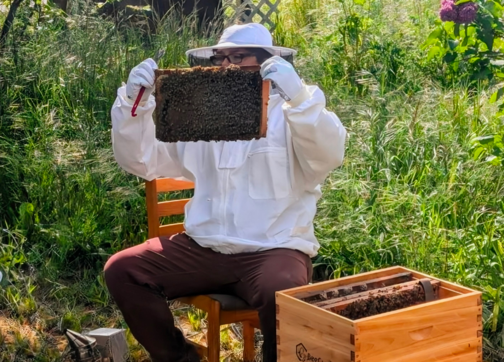

About HoneyTide
Stewardship Begins with Curiosity
HoneyTide Apiary began with a simple fascination for honey bees and a growing desire to better understand the living systems that support our communities.
What started as curiosity quickly became a passion for stewardship, education, and a deeper relationship with the natural world.
Meet the Beekeeper
My name is Camron Purdum, and I founded HoneyTide Apiary in Springfield, Oregon as a way to combine my love of learning, community, and environmental stewardship.
Through beekeeping, I discovered that bees are more than honey producers. They are ambassadors of a much larger story about ecology, agriculture, and our connection to the land around us.
Every colony, swarm capture, inspection, and lesson learned has reinforced the same belief: when people take the time to understand and care for nature, both communities and ecosystems become stronger.
More Than Honey
Honey bees are one part of a much larger network of pollinators that support food production, biodiversity, and healthy ecosystems. Honey, beeswax, and other hive products are meaningful gifts from healthy colonies, and I want to handle them with the same care I give the bees themselves.
That is why HoneyTide starts with stewardship. When the colonies are healthy and strong enough to share surplus responsibly, I hope to offer small-batch local honey and hive-based products as part of the same work: caring for bees, supporting local food systems, and helping people understand the role pollinators play in our daily lives.
To me, honey is one of the clearest signs that the work is in balance — a
blessing that can be shared when nature is healthy, thriving, and moving in
rhythm with itself.
A Lifelong Learning Journey
Beekeeping has taught me humility more than anything else. Every season presents new challenges, new questions, and new opportunities to learn.
Alongside hands-on work in the apiary, I’m enrolled in the OSU Master Beekeeper Apprentice Program, participate in the OSU Bee Advocate Program, and am a member of both the Lane County Beekeepers Association and the Oregon State Beekeepers Association. These experiences help me learn from experienced beekeepers, contribute to pollinator education efforts, and keep building the knowledge I need to become a better steward of honey bees and the ecosystems that support them.
I’m building HoneyTide on the belief that good stewardship begins with curiosity, patience, and a willingness to keep learning.
What Guides the Work
Rooted in Stewardship
Curiosity
Approaching each colony and each season as an opportunity to learn, observe, and grow.
Connection
Helping people reconnect with the natural systems, food systems, and pollinators that support daily life.
Responsibility
Practicing beekeeping with care, patience, humility, and respect for the bees and the land.
Looking Beyond the Hive
My vision for HoneyTide extends beyond beekeeping alone. I envision a future where people have a stronger connection to their local food systems, a greater appreciation for pollinators, and more opportunities to engage with agriculture and environmental stewardship.
As HoneyTide grows, I hope to create opportunities for education, community engagement, pollinator advocacy, and sustainable agriculture. Long-term, that vision includes expanded gardens, educational workshops, community gatherings, and a place where people can experience firsthand the relationship between healthy ecosystems, local food, and the remarkable work of pollinators.
I want HoneyTide to be a place where people can slow down, reconnect with the natural world, and discover the beauty of the systems that quietly sustain our communities every day.
Nature's Rhythm. A Bee's Blessing.
Connection Is at the Heart of HoneyTide
At its heart, HoneyTide is about connection — between people and nature, between communities and local food systems, and between stewardship and the living world that supports us all.
Because when nature is cared for and allowed to thrive, the gifts of the hive follow naturally.
Meet the Colonies